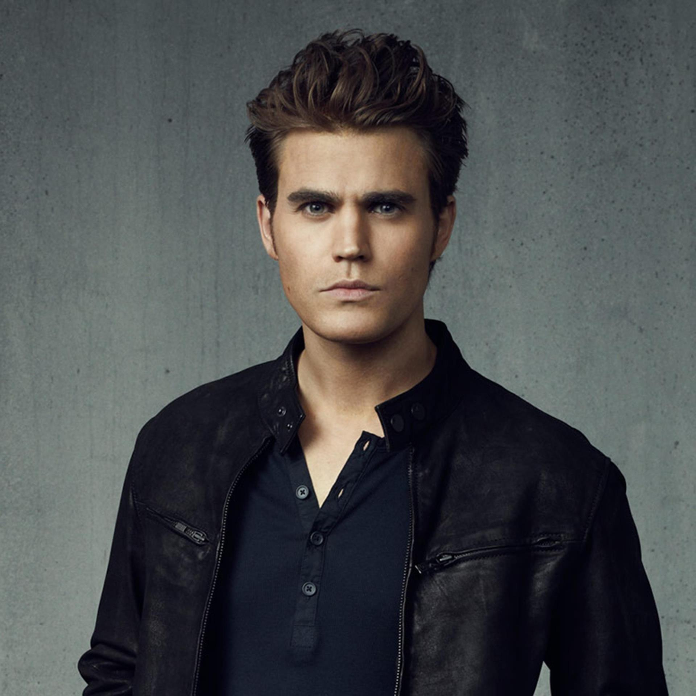

Nina Dobrev as Elena Gilbert (season 1–6; guest season 8),[6] a young orphan who falls in love with vampire Stefan Salvatore and later his brother, Damon, creating a love triangle. When Stefan shuts his humanity off after being blackmailed by Klaus, Damon is given the opportunity to grow closer to Elena. This results in her being further drawn into the supernatural world and results in her struggling to survive supernatural events in the town. Dobrev also portrays Elena's doppelgänger, Katerina Petrova also known as Katherine Pierce. Dobrev sporadically appeared in subsequent seasons and played a significant role in the fifth season. Dobrev also plays the progenitor of the Petrova doppelgängers, Silas's true love known as Amara, during the fifth season, whom he had sought in the afterlife for two thousand years. Dobrev also played another doppelgänger Tatia in The Originals season 2 episode "Red Door."[7] In the season 6 finale, Elena's life was tied to Bonnie's in such a way that as long as Bonnie is alive, Elena will remain asleep. Damon put Elena in a coffin and had her hidden in a warehouse in Brooklyn for the next 60 years or so while he waits for her to wake up. In the series finale, Elena's curse is broken, she reunites with Damon and they live a long and happy life together with her becoming a doctor.
Paul wesely

Paul Wesley as Stefan Salvatore,[8] a good-hearted and affectionate vampire and the complete opposite of his older brother, Damon Salvatore. Later in the series, Stefan reverts to his old ways as a Ripper to save Damon from a werewolf bite. His role becomes more antagonistic, after being forced to turn his humanity off. Eventually, he returns to his good-hearted and caring self and reconciles with Elena, but the relationship doesn't last long. He becomes human again and marries Caroline in Season 8 and is killed afterwards in the series finale as he sacrifices himself to save Mystic Falls. Wesley also portrays his revealed doppelgänger, Silas (seasons 4–5), the world's first immortal being. Wesley also played another doppelgänger, Tom Avery, during the fifth season.
Ian somerholder
Ian Somerhalder as Damon Salvatore,[9] Stefan's malevolent vampire brother. He is mostly thought of as selfish and manipulative, but later on begins to display a more caring side. Though his love for Elena is initially one-sided, she begins to develop feelings for him as they work together to save Stefan after he's given in to his Ripper side. They begin dating in season 4, and continue to date (with some breakups along the way) until Elena is put into her deep sleep at the end of season 6. They reunite in the series finale when Elena wakes up from the sleeping spell. Throughout the series, Damon is able to repair his relationship with Stefan and becomes best friends with Alaric and Bonnie.
Candice king
Candice King as Caroline Forbes,[13] Elena and Bonnie's best friend, who was insecure and often jealous of Elena at first, but after becoming a vampire in the second season becomes more caring and sympathetic. Neurotic but lovable, Caroline has been the love interest of many of the male characters. Initially serving as Damon's plaything in season 1, which she still hates him for, she has had serious relationships with Matt, Tyler, Alaric, and Stefan, and was long the subject of Klaus's adoration. Currently, she is raising twins with Alaric.
Kat graham
Kat Graham as Bonnie Bennett,[12] Elena and Caroline's best friend and a very powerful witch. She has died numerous times but always found a way to return. She develops and controls her powers with the help of her grandmother, Sheila or "Grams", another witch in the family. She is often able to use her magic to help the group, and while she initially hates vampires, particularly Damon, she ends up warming up to them and becomes Damon's best friend after being stuck in a prison world with him for four months. Bonnie has lost and regained her ability to do magic multiple times throughout the show. She spent seasons 2 through 5 in an on-again, off-again relationship with Elena's brother Jeremy and later became involved with Enzo. In season 7, Bonnie faces the challenge of having received Rayna Cruz's hunters' curse, which puts all her vampire friends at risk.
Steven R.Mc queen
Steven R. McQueen as Jeremy Gilbert (seasons 1–6; guest season 8),[10] Elena's younger brother, later revealed to be her biological cousin. He later becomes a member of The Five, a vampire hunting group. Jeremy is killed in season 4 after Katherine throws him onto Silas, who drains his blood. He is resurrected by Bonnie Bennett, his love interest, in the season 4 finale.
Zach roerig
Zach Roerig as Matt Donovan,[14] Vicki's younger brother and Elena's childhood friend and ex-boyfriend, who became romantically involved with Caroline in season 1. They remain good friends even after breaking up during the second season. Matt wants no part in the supernatural events in his town and later is at odds with the vampires as he becomes a police officer and tries to protect the town from them. He becomes a sheriff in Season 8 and plans to run for mayor.
Matt davis
Matt Davis as Alaric Saltzman (seasons 1–3, 6–8; recurring season 4–5),[16] a history teacher, vampire hunter, and love interest for Jenna. Davis left the show at the end of season three after Alaric was killed. His character returned as a regular after in season 5, after he was resurrected.[17] His vampirism is stripped away by magic, turning him into a human again after being saved by Josette Laughlin (Jodi Lyn O'Keefe) and the two begin dating. Jo becomes pregnant and they plan to marry, but she is murdered by her brother Kai at their wedding. Jo's family of witches was able to transfer the babies to Caroline, who gives birth to their twins. Caroline and Alaric move to Dallas together and begin a relationship, but end it when Caroline decides to be with Stefan after his return at the end of season 7. He establishes a boarding school with Caroline for supernatural teens at the end of the series.
Joesph morgan
Joseph Morgan[18] as Klaus Mikaelson (seasons 3–4, recurring season 2; guest seasons 5, 7), an Original Vampire who begins to build an army of new "hybrids", which are half vampire and half werewolf. During season 3, Klaus began to develop feelings for Caroline and falls in love with her. Morgan left the show after the fourth season when Klaus moved to New Orleans on his own family's spin-off, The Originals.
Michael Malarkey
Michael Malarkey[19] as Enzo St. John (seasons 6–8; recurring season 5), a vampire formerly under the imprisonment of the Augustine society. He was Damon Salvatore's cellmate back in the 1950s when the latter was captured by the Augustines. He and Damon revived their friendship as he searched for his lost lover, Maggie. In the episode "Man on Fire," Enzo shut off his humanity after finding out the truth about Maggie's death and is later killed by Stefan, having his heart ripped out. He was resurrected in the season finale, and later becomes Bonnie's love interest before coming under the control of the monster in the vault at the end of season 7. He is killed by a possessed Stefan and watches over Bonnie in the afterlife in Season 8.